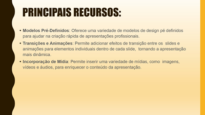
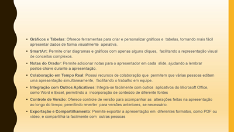
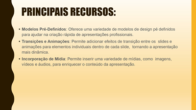
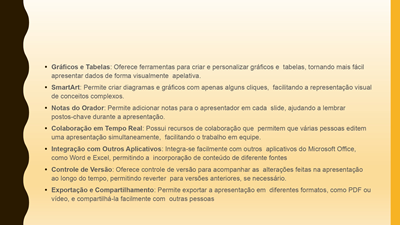
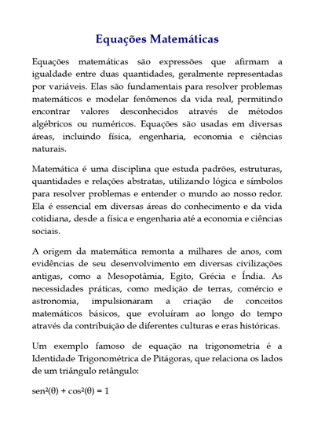
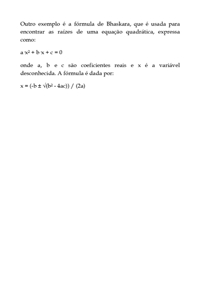
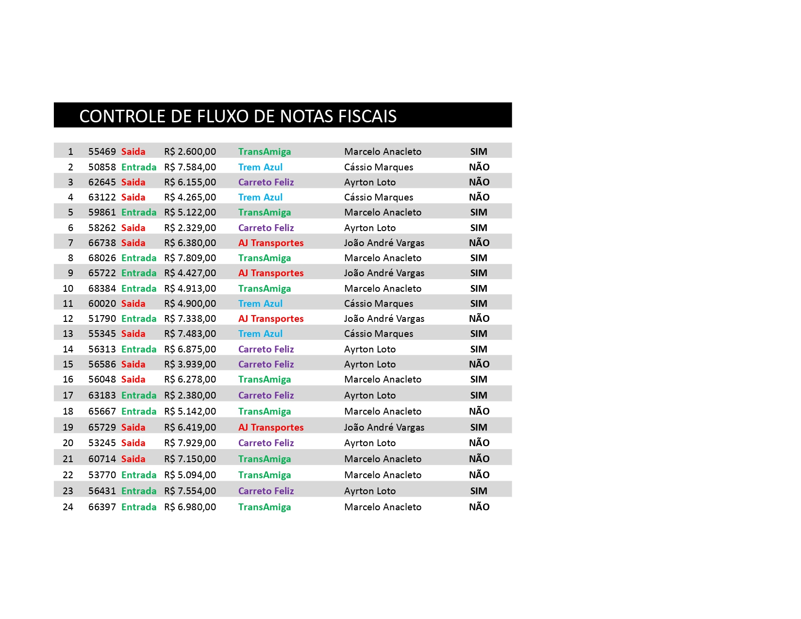
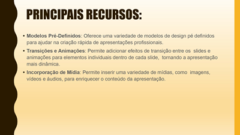
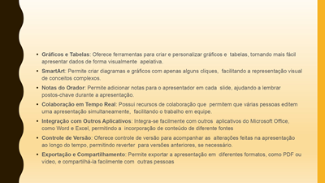

software de escritório PowerPoint

 



software de escritório Microsoft Word


software de escritório Microsoft Excel

Bem-vindo!
Professor:José Ricardo Maçaneiro
Hardware de computador são os componentes físicos e tangíveis, como a placa-mãe, o processador e a memória RAM, que formam a estrutura física de um dispositivo eletrônico. A placa-mãe é o circuito central que conecta todos os outros componentes, permitindo que eles se comuniquem. O processador (CPU) é o "cérebro" do computador, responsável por executar as instruções e processar os dados. A memória RAM é uma memória de curto prazo que armazena temporariamente os dados que o computador está usando no momento, sendo apagados quando o dispositivo é desligado.
Um sistema operacional (SO) é um software fundamental que age como intermediário entre o hardware do computador e os outros programas e usuários, gerenciando os recursos do sistema e permitindo a comunicação entre eles. Ele fornece a plataforma para que outros softwares possam ser executados e para que o usuário interaja com o dispositivo. Exemplos de sistemas operacionais incluem o Windows, macOS, Linux e Android.
Um sistema de arquivos é a estrutura de regras que organiza e gerencia como os dados são armazenados, nomeados e acessados em um dispositivo de armazenamento, como um disco rígido. No modo texto, a interação ocorre por meio de comandos digitados no prompt de comando (cmd), como dir para listar arquivos e cd para mudar de diretório. Já no modo gráfico, essa interação é feita de forma visual e intuitiva através de ícones e janelas no Explorador de Arquivos, onde se pode clicar para abrir, copiar, arrastar e soltar arquivos e pastas.
Software de escritório, também conhecido como software de produtividade, é um conjunto de programas que auxiliam nas tarefas do dia a dia de um escritório, como a criação de documentos, planilhas e apresentações. Três exemplos comuns são o Microsoft Word (editor de texto), o Microsoft Excel (planilha eletrônica) e o Microsoft PowerPoint (editor de apresentações).

